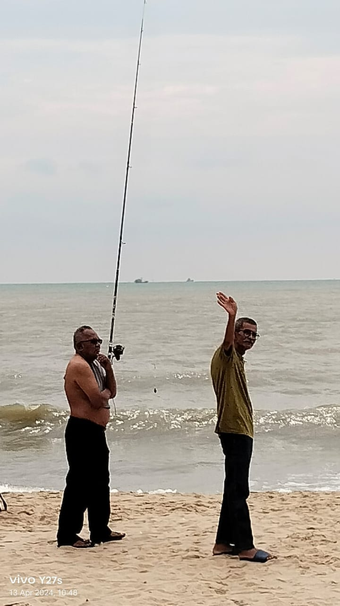
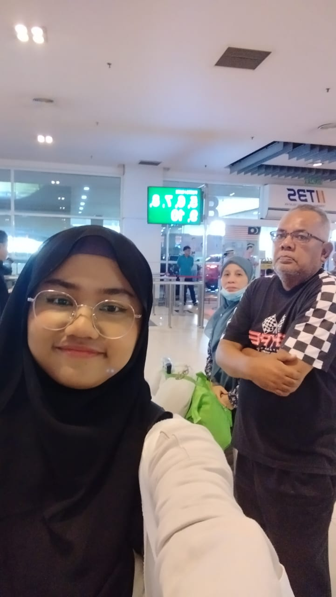
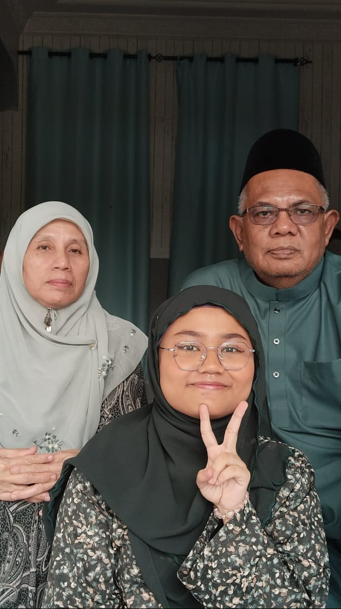
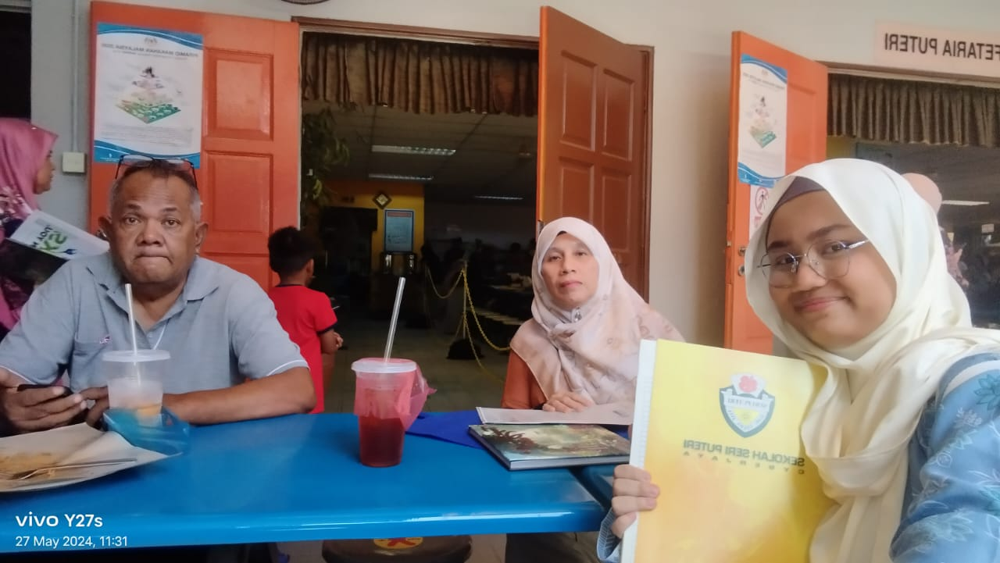
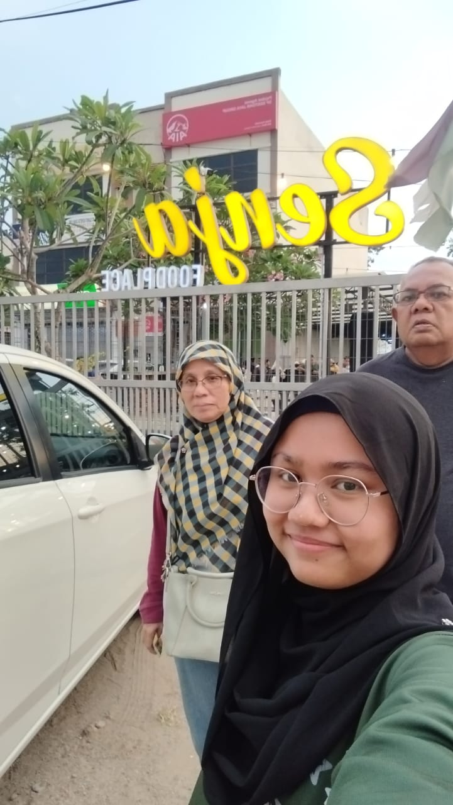
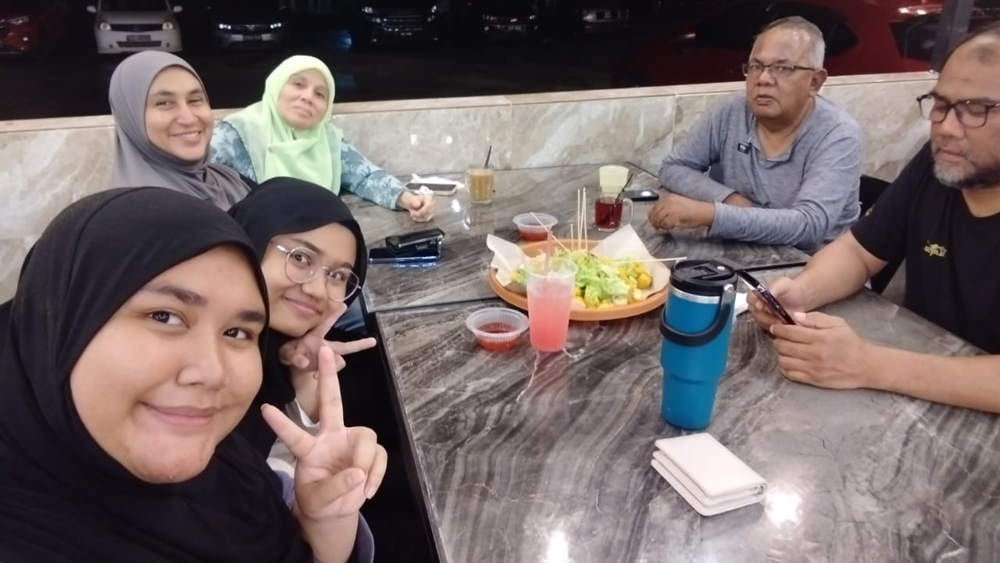
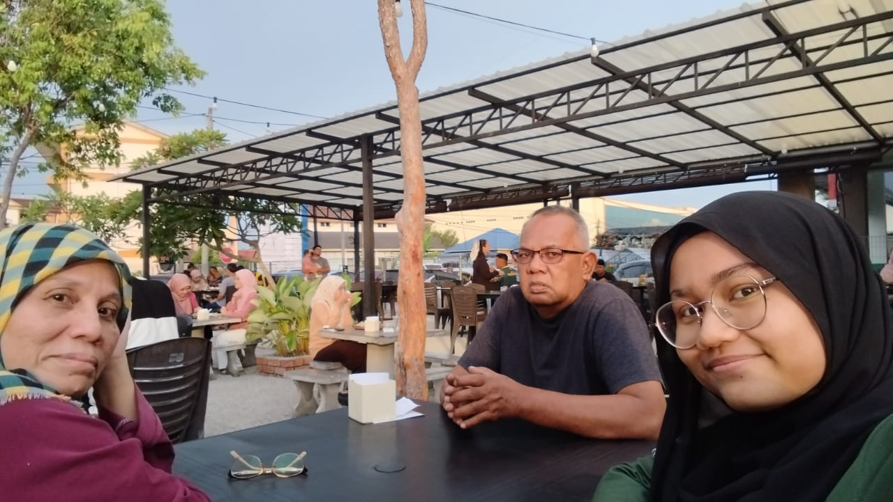

| All about him <3 |
|---|
|
Dear Abah, to the strongest person I have ever known Born on 7th April 1955. The second child in his family, surrounded by lovely siblings. Sadly passed away recently on 8th of April 2026, a few days after sending me back to campus in Kedah. He suffered from a chronic heart disease as he was hospitalised during March 2026 due to 3 of his blood vessels were completely blocked. Was supposed to receive treatment in April 16 and June 9 but alas, he was more loved by Al ah SWT. Abah or his name Mohamad Arif Bin Mohamad Taharim was the strongest dad I ever met. Always working hard and always bringing a smile to my face in my childhood days. It felt like it was yesterday, him bringing me around to see the world, bringing in toys and traditional games like congkak for me to experience. Even when he was hit hardship, he never once said anything. A patient dad even with some of my attitude that he faced, my inability to wake up early during school mornings, my stubborness, the fights happened with my mother, my ridiculous request. He was there to calm or mediator in a lot of stuff. One thing that will always stuck in my mind would be how he was always there everytime, hearing me talk about my day when I was in boarding school and while being in Kedah, him hearing the stress what I faced and many more. He never scolded me a lot as he always said "abah percaya anak abah" or that if I ever cried about something or in front of him, he would pull me into a hug and say "dah dah, jangan nangis, abah tak suka tengok anak abah nangis". Back when I first heard the news, I didnt know what to feel. I picked up the signs a few months ago, him forgetting places, his voice quieter and how he doesnt say much. Back then I was in denial..I wanted to believe he could live long enough to see me graduate, get married and give him grandkids but then again we could only plan and pray. Allah SWT had loved him more, and wanted him to finally rest after years of hard work. If there's one thing I regret not doing while he was here is probably not getting one last hug from him. Somehow on the day, he sent me back to campus, he didnt hug me as usual, in fact even lock the car door. I was offended but then again, he wasnt that well but could muster up the strength to drive all the way from Selangor to Kedah and back to Selangor. Wishing him Happy birthday a day before he passed, was something I never expect for it to be my last phone call with him. The memory of one final kiss on his forehead was unforgettable...his skin no longer warm, the one that I'm used to. Grief hits everyone differently. Back then I felt like I moved on to quick, my friends cheering me up, laughing with them. But as this month came and I'm faced with hardships, I find my finger hovering above his contact, wanting to call and talk about it and maybe cry. Alas, what met me was the reality, he isnt here anymore...he wont be there everytime I come back from a mid sem break, he isnt there to see me talk on how I did on test, he isnt there for me to call and cry about my failures anymore. No more of Abah acting as a mediator between me and my mom. People closed to him would say he loved me dearly, as his own child even at times where I didnt see it. Now that he's not here anymore, I could only pray, wishing and hoping for him to finally get the rest he needed..without suffering from stress and chronic diseases. Love you Abah, forever and always even when I dont say it openly or as often as I want. Sincerely, his little girl, forever and always Aqilah Nadhirah |
| Pictures & Memento's (he doesnt like taking pictures as much) |
|---|

Him at the beach HSHSHS, with my ayah ngah ♡

Them sending me to the bus station for the first time ever✨

He was smiling in this pic♡

He was also smiling in this✨

He didnt mind what my result was...he just knew I did my best..Thats how much he trusted me... ♡

Dinner at Senja ♡

Having dinner with my Maksu and her family✨

Another Family Pic at Senja♡
© 2026 Qie's Little Universe. All Rights Reserved.
Disclaimer: This website is created for the purpose of IML254 individual project assignment. All materials used belong to their respective owners.
Recommended Browser: Google Chrome | Resolution: 1920x1080 | Last Updated: June 2026